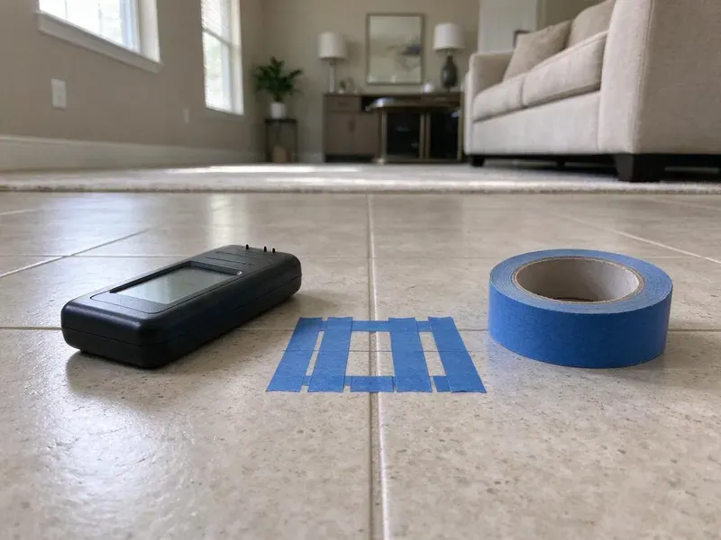

New Construction Plumbing in Ranson, WV
When you're building a new home in Ranson, WV, you need plumbing installed correctly from the ground up. GJK Plumbing specializes in complete new construction plumbing services.
- Fast Bids From Your Plans
- Licensed Plumbers
- Experienced Plumbers
- Durable Materials
Need New Construction Plumbing Done Right in Ranson, WV?
Get a clear quote for your new construction plumbing project from GJK Plumbing.
New Construction Plumbing in Ranson, WV Built for West Virginia Conditions
GJK Plumbing works alongside general contractors, custom builders and owner-builders across the Ranson area. Our crews coordinate with your concrete, framing and drywall trades so each plumbing phase is inspected and signed off before the next trade shows up.
Our expertise includes:
- Gas piping, water heater venting and fully tested final connections
- Sizing and setting main water and sewer lines.
- Fixture installation for kitchens, bathrooms, and utilities.

Additional Plumbing Maintenance Services in Ranson, WV
Our maintenance and specialty plumbing services in Ranson, WV protect your home year-round and extend the life of every system.


Customers
Why Choose GJK Plumbing for New Construction Plumbing in Ranson, WV?
Choosing the right plumbing contractor for new construction impacts your project's timeline and future maintenance costs. Our precise planning and execution prevent costly rework and ensure your plumbing system is built to last.
- Schedule Discipline, We book underground, top-out and trim dates up front and keep them.
- Experienced Team, Our licensed plumbers have deep experience in new home plumbing, understanding the specific challenges of different foundation types.
- Quality Materials, We select long-lasting piping, fittings, and fixtures chosen for local conditions, including water quality and soil movement.
Citywide Coverage
No matter where your new home construction is located within Ranson, WV, GJK Plumbing is your local plumbing partner. We have the logistics and manpower to handle projects across the entire area.
Experienced Team
Each plumber at GJK Plumbing is a seasoned professional trained in current new construction techniques and safety protocols. Their experience ensures that every aspect of your plumbing system is installed correctly the first time, minimizing future issues.
Safety-First Approach
We install to the plumbing and fuel gas codes adopted by your city or county and schedule each required inspection. Gas lines are pressure tested and tagged, and water heaters get proper venting, seismic straps where required and a properly piped T&P discharge line.
Trusted Certified Ranson Plumbing Services Professionals
At GJK Plumbing, we take pride in providing licensed, certified plumbing services throughout Ranson, WV. Backed by leading industry credentials, our experienced plumbers combine technical skill with genuine customer care. Whether it is repair, installation, or maintenance, we follow strict safety and quality standards to deliver lasting results you can trust.
Call Us Now PHCC Plumbing Contractor Recognition
PHCC Plumbing Contractor Recognition Better Business Bureau (BBB) Accreditation
Better Business Bureau (BBB) Accreditation Angi Certified Pro
Angi Certified Pro ISO 9001 Quality Management Certification
ISO 9001 Quality Management CertificationInspection-Ready New Construction Plumbing Services in Ranson, WV
Final Trim and Fixture Setting in Ranson
At trim we install toilets, faucets, garbage disposals, dishwashers, ice maker boxes and laundry connections. We work with fixtures from Moen, Delta, Kohler, American Standard and the other brands builders often choose, or with owner-supplied fixtures. Every fixture is checked for flow, drainage and leaks, and angle stops are set straight and tight. We finish by running every fixture at once to verify the system drains and vents properly under load.

Rough-In Plumbing Services in Ranson
The rough-in phase is where the core plumbing system is installed within the walls, floors, and ceilings before drywall. This includes all supply lines, drain lines, and vent piping for every fixture. Our plumbers carefully plan and execute the rough-in, using durable fittings and ensuring all pipes are properly secured and leak-tested before inspection.
Commercial and Multifamily New Construction in Ranson
We also plumb small commercial buildouts, offices, retail suites and multifamily projects. These jobs often require grease interceptors, backflow assemblies, commercial water heaters and ADA compliant fixtures. We read commercial plans, coordinate submittals and keep the general contractor updated through each inspection. Our crews scale up so plumbing never becomes the bottleneck on your project.
Residential New Build Plumbing in Ranson
For new homes, our residential new construction plumbing includes the complete installation of water supply lines, drain waste vent systems, and gas lines. We confirm proper sizing and pressure for all fixtures, from showers to kitchen sinks, while accounting for local water quality and potential foundation movement. Water hardness in West Virginia ranges from moderate to hard in many areas, and mineral scale is a common issue for water heaters and fixtures. Our process includes meticulous planning to prevent future slab leaks or drainage issues tied to the soil under your lot.
Sewer and Water Main Connections in Ranson, WV
Connecting your new home to the municipal sewer and water mains is a critical step in new construction plumbing. GJK Plumbing handles all aspects of these connections, including excavation, trenching, pipe laying, and backfilling. We provide proper grading and sealing to prevent future leaks or blockages. Shale and clay soils can hold water and shift over time, which can crack sewer lines and push water into basements.
Sewer and Drainage Systems in New Builds in Ranson
A reliable sewer and drainage system is essential for any new property. We design and install complete sewer lines, septic systems, and storm drains, making sure of proper grading and connection to municipal services or on-site treatment systems. Shale and clay soils can hold water and shift over time, which can crack sewer lines and push water into basements. We account for soil movement on your lot, using tough PVC piping and careful bedding to prevent future blockages or pipe damage.
Rough-In and Top-Out Plumbing in Ranson, WV
Once framing is up, we run supply and vent lines through the walls and attic and set every stub-out for sinks, tubs, showers and appliances. We usually install PEX-A with a central manifold so each fixture gets its own line and shutoff. Shower valves are set at the heights you choose, and tub sets are installed and protected before the drywall goes on. A full pressure test is held for inspection so nothing hidden in the walls is ever a question.

Fixture Installation and Finishing in Ranson, WV
Once the rough-in is complete and walls are up, GJK Plumbing handles the final installation of all plumbing fixtures. This includes sinks, toilets, showers, bathtubs, dishwashers, and washing machines. We make sure everything is perfectly aligned, sealed, and fully functional, providing a polished finish to your new home's plumbing system.
New Construction Plumbing Near Me in Ranson, WV
Local matters on new builds because inspectors, utility layouts and soil conditions differ from one jurisdiction to the next. We already know what the inspectors around Ranson look for at underground, top-out and final. That familiarity saves you reinspection fees and lost days.
When you search for a new construction plumber near me, you want a crew that can be on site the morning your foundation is formed. Our crews are based close enough to Ranson to keep that kind of schedule. We can walk your lot, review your plans and give you a firm bid fast.
GJK Plumbing at a Glance
- Licensed and insured plumbers serving Ranson, WV
- 24/7 emergency service with same-day scheduling
- Upfront, flat-rate pricing before work begins
- 4.8-star rated by 832+ West Virginia customers
Ranson Map
Ranson Information
- Population
- 5,699
- Area codes
- Local
- Service area
- Ranson and communities within 40 miles
- Nearby
- Charles Town, Martinsburg, Cheat Lake, Brookhaven
New construction plumbing in Ranson, WV demands careful attention to detail, because shifting soil can put stress on foundations and underground piping. Shale and clay soils can hold water and move over time, which can crack sewer lines and push water into basements.
Expert Services
Trust our professionals for reliable GJK Plumbing solutions in Ranson, WV.
Our Specialized Plumbing Services in Ranson, WV
At GJK Plumbing, we provide a complete range of plumbing services across Ranson, WV. From leak detection to full system installations, our team ensures fast, precise, and affordable service for both residential and commercial properties. Explore our core services below:


How Our New Construction Plumbing Process Works in Ranson, WV
Our new construction plumbing process is designed for clarity, efficiency, and adherence to the highest standards. We guide you through each step, ensuring your new home's plumbing is done right.
Request a Quote
Start by calling (681) 223-3607 to schedule a consultation. We will discuss your project plans, review blueprints, and provide a clear, transparent quote for all plumbing work required.
Design & Planning
Our team helps with plumbing system design, ensuring optimal layout and sizing for your new home. We consider water pressure, fixture count, and future expansion possibilities.
Rough-In Installation
We carefully install all hidden plumbing components, including water supply lines, drain pipes, and vent systems. This phase concludes with thorough pressure testing and inspection.
Frequently Asked Questions About New Construction Plumbing in Ranson
The cost of new construction plumbing in Ranson varies a lot based on the size and complexity of the project, number of bathrooms, and fixture choices. For a standard 3-bedroom, 2-bathroom home, rough-in and finish plumbing can range from $10,000 to $25,000. Commercial projects or luxury homes with advanced systems run higher.
Several inspections are needed during new construction plumbing. These typically include an underground or rough-in inspection before walls are closed, a top-out inspection if applicable, and a final inspection after all fixtures are installed and the system is operational. We schedule and manage all inspections to ensure compliance.
Damp basements and crawlspaces are common in Ranson and around the state, which can speed up corrosion on pipes and fittings. Keeping heat on in unused rooms and letting faucets drip on the coldest nights helps prevent many frozen pipe calls. We select materials and installation methods that can handle local conditions, insulating pipes and burying lines at adequate depths where freezing is a risk. We also use materials that can handle thermal expansion and contraction, helping prevent leaks and bursts.
Yes, we can handle only the underground, only rough-in and top-out, or only trim. If another plumber started the job, we'll inspect and test their work before taking it over. That protects you and keeps the inspection record clean.
GJK Plumbing offers a solid warranty on all our new construction plumbing installations. This covers both materials and labor, ensuring peace of mind that your new plumbing system in Ranson is protected against defects for a specified period after completion.
We typically use PEX-A for water supply because it handles heat and resists the scale and pinhole problems copper can develop with aggressive or hard water. Drains are usually PVC or ABS, depending on local code and builder preference. Copper is an option for mains or exposed runs when you want it.
Common challenges in new construction plumbing include coordinating with other trades, working around site-specific conditions like rocky soil or foundation types, and ensuring strict adherence to evolving building codes. Our seasoned team in Ranson is adept at navigating these complexities.
Yes, all new construction plumbing projects in Ranson, WV require permits from the local building department. GJK Plumbing handles all necessary permit applications and ensures that all work passes required inspections at each stage of the project.
What People Are Saying About Our Plumbing Experts?

Daniel K.
A pipe burst at 11 pm and they actually answered. The plumber showed up within the hour, shut everything down, and had us back to normal the next morning. Could not ask for more.
Emergency Plumbing · Brookhaven, WV
James P.
Our commercial plumbing system had a leak under the sink, and GJK Plumbing handled it professionally. The plumbers arrived quickly and restored everything without disruption to our customers.
Commercial Plumbing · Charles Town, WV
Laura S.
I scheduled a water heater replacement, and the team made the process smooth and affordable. The new unit works perfectly, and they cleaned up after completing the job.
Water Heater Replacement · Morgantown, WV
Mark T.
When our office needed drain cleaning, GJK Plumbing provided quick, reliable service. The plumber arrived on time and made sure every drain flowed perfectly before leaving. Very satisfied.
Drain Cleaning · Brookhaven, WVSofia M.
Two new toilets installed in one visit, no mess left behind, and the tech even adjusted a faucet he noticed was dripping. Fair pricing and really friendly.
Toilet Installation · Cheat Lake, WVRobert G.
The trenchless sewer replacement saved our front yard. They walked us through the camera inspection footage first so we knew exactly what we were paying for.
Sewer Line Replacement · Elkins, WV